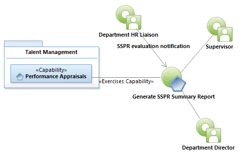
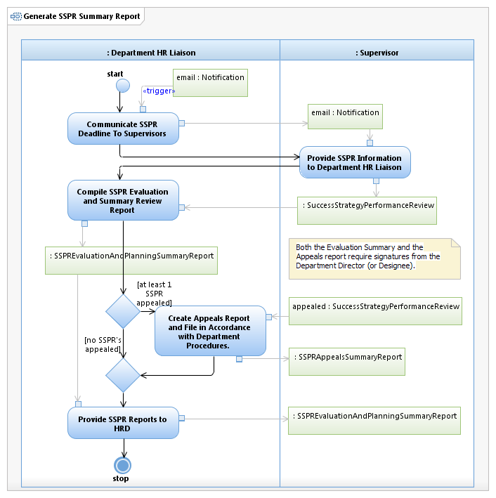

Use Case Model: Generate SSPR Summary Report
Architect: Aaron Brown, IT Enterprise Architect Senior
Date Last Modified: 09/21/2012
User Review: First Last, Title
Date: mm/dd/yyyy
Generate a summary of SSPR scores within a department for an SSPR reporting period.
Follow link to Role Definitions

Use Case Model: Generate SSPR Summary Report

Activity Model: Generate SSPR Summary Report